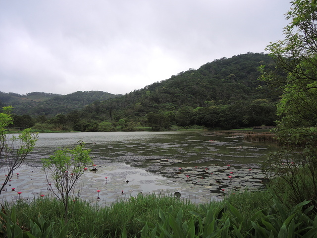

東源森林遊樂區
東源森林遊樂區是被蒼翠茂林群圍住的幽靜山谷，園區內的森林
步道就像東源導遊，總可以帶領遊客走向每一處值得停留的景物，
美景如畫的東源湖、清新高潔的野薑花花海、沉靜優雅的桃花心木
森林、原味十足的石頭小屋，都是讓人流連忘返、一再回首的理由。
電話：+886-8- 8831001
地址:屏東縣945牡丹鄉東源村東源湖
交通指引：自行開車:屏東九如交流道→臺3線→臺1線→水底寮→臺1
線 →臺26線→屏199號縣道→牡丹水庫→東源森林遊樂區
開放時間：每日08:00∼17:00
停車場：停車場位於園區入口處，約可停放大型車2輛、小型車18輛
資訊取自: https://bluezz.tw/c.php?id=31097
照片取自:https://yo.xuite.net/info/photo.php?e=Rt2ApVBKsSpl!ZmKEQiDHM&pid=1020769973